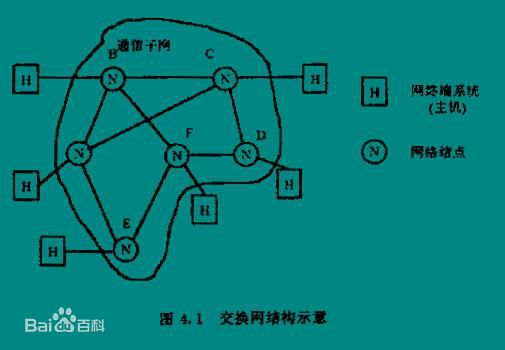

网络层
网络层是OSI参考模型中的第三层，介于传输层和数据链路层之间，它在数据链路层提供的两个相邻端点之间的数据帧的传送功能上，进一步管理网络中的数据通信，将数据设法从源端经过若干个中间节点传送到目的端，从而向运输层提供最基本的端到端的数据传送服务。主要内容有：虚电路分组交换和数据报分组交换、路由选择算法、阻塞控制方法、X.25协议、综合业务数据网（ISDN）、异步传输模式（AM）及网际互连原理与实现。
功能目的
网络层的目的是实现两个端系统之间的数据透明传送，具体功能包括寻址和路由选择、连接的建立、保持和终止等。它提供的服务使传输层不需要了解网络中的数据传输和交换技术。如果您想用尽量少的词来记住网络层，那就是“路径选择、路由及逻辑寻址”。

为了说明网络层的功能，如图所示的交换网络拓扑结构，它是由若干个网络节点按照任意的拓扑结构相互连接而成的。网络层关系到通信子网的运行控制，体现了网络应用环境中资源子网访问通信子网的方式。网络层从物理上来讲一般分布地域宽广，从逻辑上来讲功能复杂，因此是OSI模型中面向数据通信的下三层（也即通信子网）中最为复杂也最关键的一层。
七层协议
应用层
与其它计算机进行通讯的一个应用，它是对应应用程序的通信服务的。例如，一个没有通信功能的字处理程序就不能执行通信的代码，从事字处理工作的程序员也不关心OSI的第7层。但是，如果添加了一个传输文件的选项，那么字处理器的程序员就需要实现OSI的第7层。示例：telnet，HTTP,FTP,NFS,SMTP等。
表示层
这一层的主要功能是定义数据格式及加密。例如，FTP允许你选择以二进制或ASCII格式传输。如果选择二进制，那么发送方和接收方不改变文件的内容。如果选择ASCII格式，发送方将把文本从发送方的字符集转换成标准的ASCII后发送数据。在接收方将标准的ASCII转换成接收方计算机的字符集。示例：加密，ASCII等。
会话层
它定义了如何开始、控制和结束一个会话，包括对多个双向消息的控制和管理，以便在只完成连续消息的一部分时可以通知应用，从而使表示层看到的数据是连续的，在某些情况下，如果表示层收到了所有的数据，则用数据代表表示层。示例：RPC，SQL等。
传输层
这层的功能包括是否选择差错恢复协议还是无差错恢复协议，及在同一主机上对不同应用的数据流的输入进行复用，还包括对收到的顺序不对的数据包的重新排序功能。示例：TCP，UDP，SPX。
网络层
这层对端到端的包传输进行定义，它定义了能够标识所有结点的逻辑地址，还定义了路由实现的方式和学习的方式。为了适应最大传输单元长度小于包长度的传输介质，网络层还定义了如何将一个包分解成更小的包的分段方法。示例：IP,IPX等。
数据链路层
它定义了在单个链路上如何传输数据。这些协议与被讨论的各种介质有关。示例：ATM，FDDI等。
物理层
OSI的物理层规范是有关传输介质的特性标准，这些规范通常也参考了其他组织制定的标准。连接头、帧、帧的使用、电流、编码及光调制等都属于各种物理层规范中的内容。物理层常用多个规范完成对所有细节的定义。示例：Rj45，802.3等。
路由选择
通信子网络源节点和目的节点提供了多条传输路径的可能性。网络节点在收到一个分组 网络层 网络层 后，要确定向下一节点传送的路径，这就是路由选择。在数据报方式中网络节点要为每个分组路由做出选择；而在虚电路方式中，只需在连接建立时确定路由。确定路由选择的策略称路由算法。设计路由算法时要考虑诸多技术要素。首先是路由算法所基于的性能指标，一种是选择最短路由，一种是选择最优路由；其次要考虑通信子网是采用虚电路还是数据报方式；其三，是采用分布式路由算法，即每节点均为到达的分组选择下一步的路由，还是采用集中式路由算法，即由中央点或始发节点来决定整个路由；其四，要考虑关于网络拓扑，流量和延迟等网络信息的来源；最后，确定是采用动态路由选择策略，还是选择静态路由选择策略。
静态路由
静态路由选择策略不用测量也无须利用网络信息，这种策略按某种固定规则进行路由选择。其中还可分为泛射路由选择、固定路由选择和随机路由选择三种算法。
（1）泛射路由选择法： 这是一种最简单的路由算法。一个网络节点从某条线路收到一个分组后，再向除该条线路外的所有线路重复发送收到的分组。结果，最先到达目的节点的一个或若干个分组肯定经过了最短的路线，而且所有可能的路径都被同时尝试过。这种方法可用于诸如军事网络等强壮性要求很高的场合，即使有的网络节点遭到破坏，只要源、目间有一条信道存在则泛射路由选择仍能保证数据的可靠传送。另外，这种方法也可用于将一条分组从数据源传送到所有其它节点的广播式数据交换中，它还可用来进行网络的最短传输延迟的测试。
（2）固定路由选择：这是一种使用较多的简单算法。每个网络节点存储一张表格，表格中每一项记录对应着某个目的节点或链路。当一个分组到达某节点时，该节点只要根据分组的地址信息便可从固定的路由表中查出对应的目的节点及所应选择的下一节点。固定路由选择法的优点是简便易行，在负载稳定，拓扑结构变化不大的网络中运行效果很好。它的缺点是灵活性差，无法应付网络中发生的阻塞和故障。
（3）随机路由选择：在这种方法中，收到分组的节点，在所有与之相邻的节点中为分组随机选择一个出路节点。方法虽然简单，也较可靠，但实际路由不是最佳路由，增加了不必要的负担，而且分组传输延迟也不可预测，故此法应用不广。
动态路由
节点路由选择要依靠网络当前的状态信息来决定的策略称动态路由选择策略，这种策略能较好地适应网络流量、拓扑结构的变化，有利于改善网络的性能。但由于算法复杂，会增加网络的负担，有时会因反应太快引起振荡或反应太慢不起作用。独立路由选择、集中路由选择和分布路由选择是三种动态路由选择策略的具体算法。
（1）独立路由选择：在这类路由算法中，节点仅根据自己搜到的有关信息作出路由选择的决定，与其它节点不交换路由选择信息，虽然不能正确确定距离本节点较远的路由选择，但还是能较好地适应网络流量和拓扑结构的变化。一种简单的独立路由选择算法是Baran在1964年提出的热土豆（Hot Potato）算法。当一个分组到来时，节点必须尽快脱手，将其放入输出列最短的方向上排队，而不管该方向通向何方。
（2）集中路由选择：集中路由选择也象固定路由选择一样，在每个节点上存储一张路由表。不同的是，固定路由选择算法中的节点路由表由手工制作，而在集中路由选择算法中的节点路由表由路由控制中心RCC（Routing Control Center）定时根据网络状态计算、生成并分送各相应节点。由于RCC利用了整个网络的信息，所以得到的路由选择是完美的，同时也减轻了各节点计算路由选择的负担。
（3）分布路由选择：采用分布路由选择算法的网络，所有节点定期地与其每个相邻节点交换路由选择信息。每个节点均存储一张以网络中其它每个节点为索引的路由选择表，网络中每个节点占用表中一项，每一项又分为两个部分，即所希望使用的到目的节点的输出线路和估计到目的节点所需要的延迟或距离。度量标准可以是毫秒或链路段数、等待的分组数、剩余的线路和容量等。对于延迟，节点可以直接发送一个特殊的称作“回声”（echo）的分组，接收该分组的节点将其加上时间标记后尽快送回，这样便可测出延迟。有了以上信息，节点可由此确定路由选择。